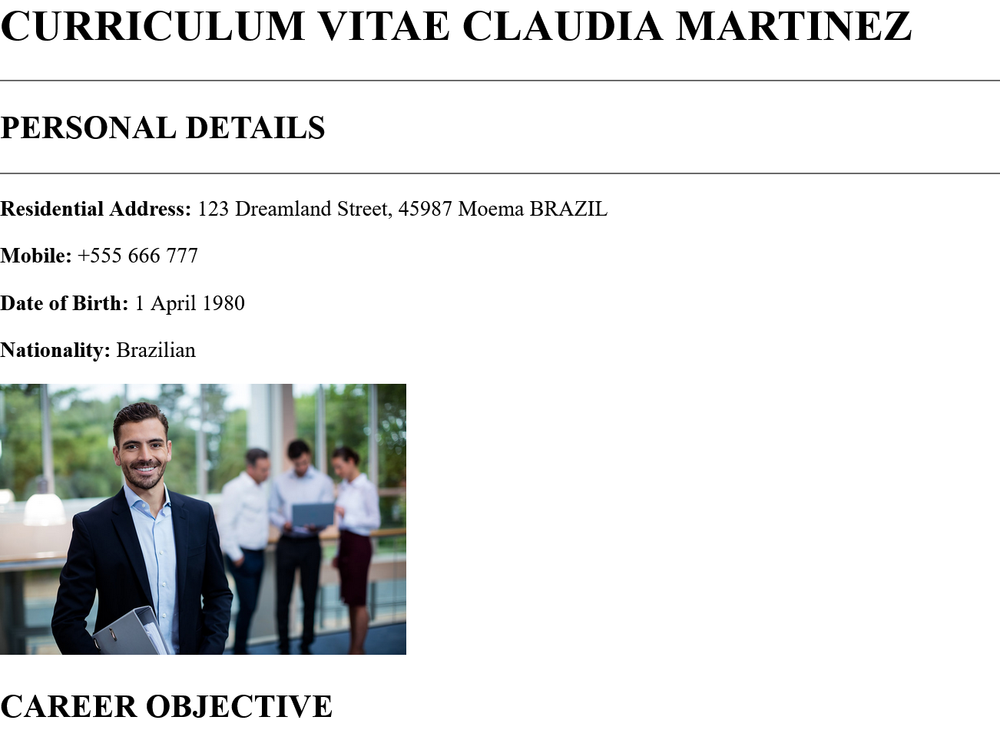
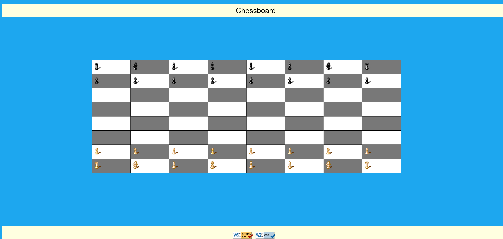
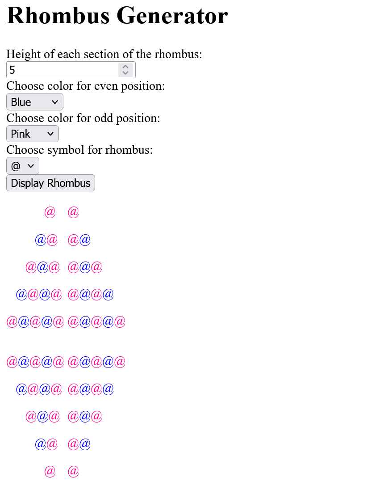
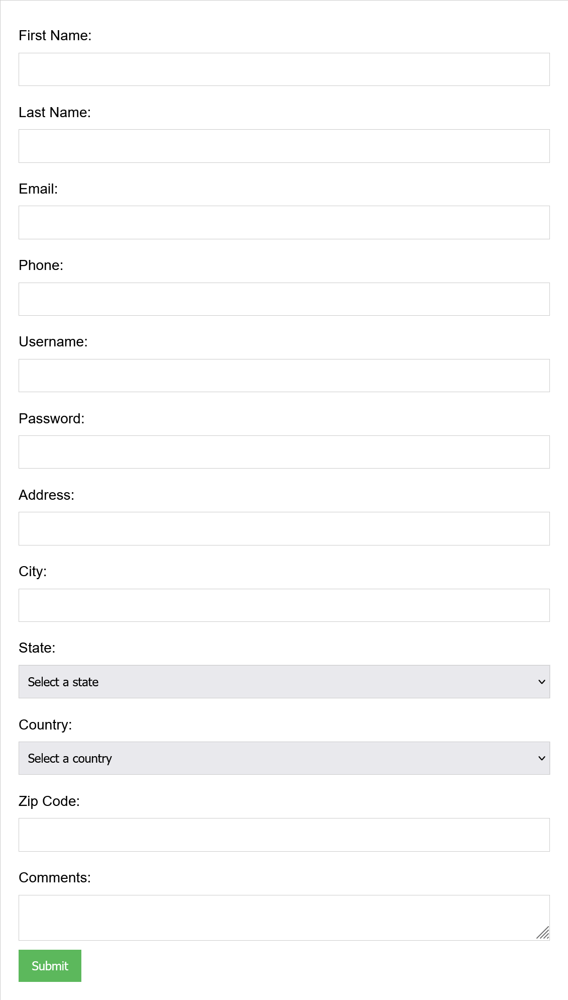
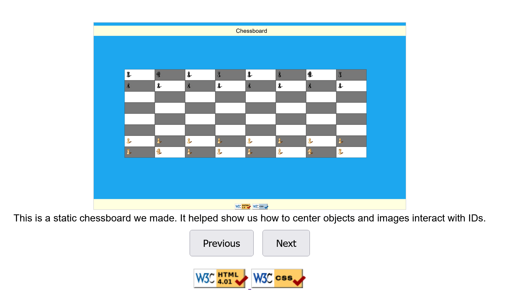

Artifacts
Here is an artifact about writing an online resume with basic HTML tags.
Here is an artifact about creating a chessboard using divs and css.
Here is an artifact about writing an online resume with basic HTML tags.
Here is an artifact about creating a form that requires inputs to be completed.
Here is an artifact aboutcreating a slide show of all previous artifacts.
